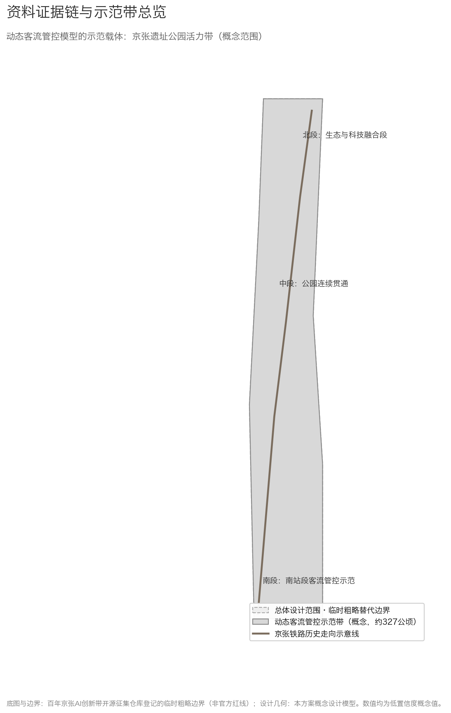
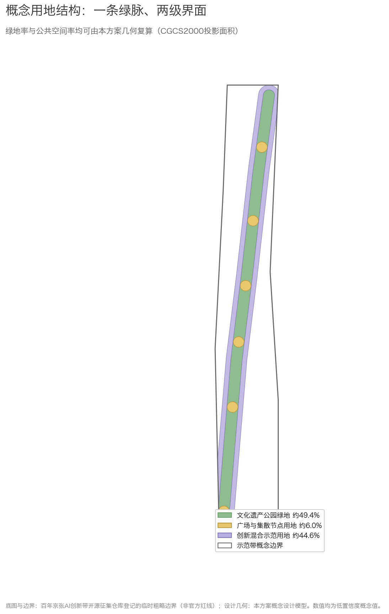
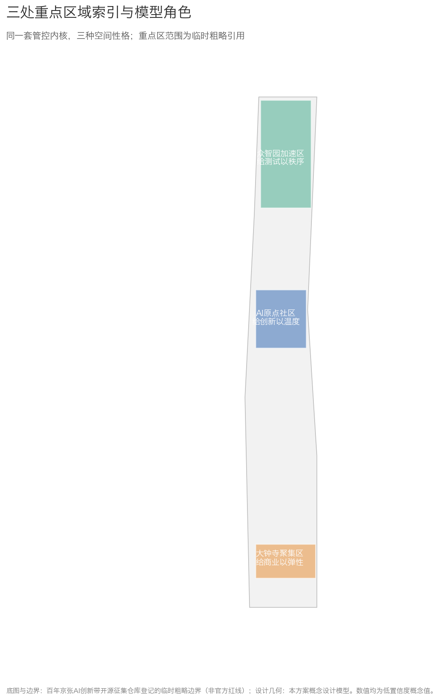
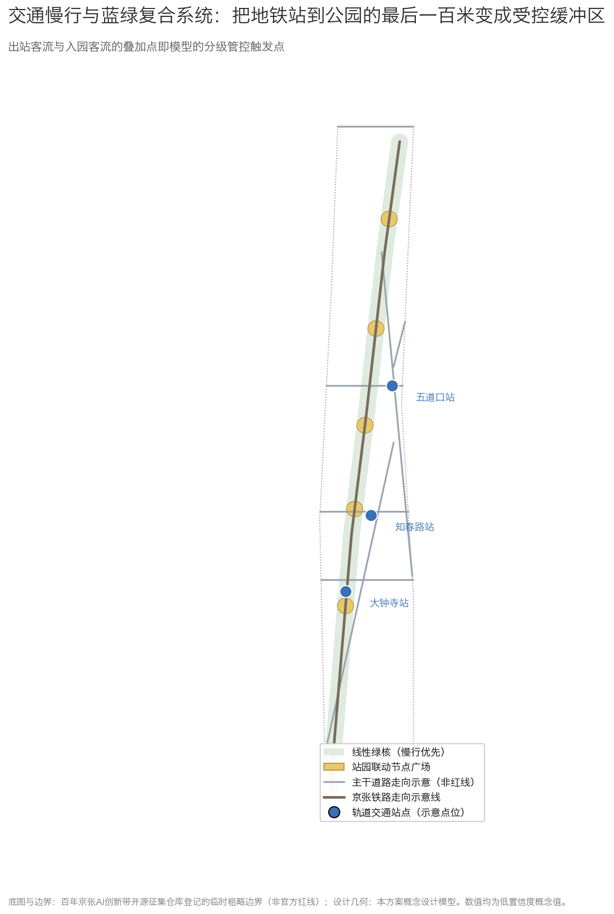
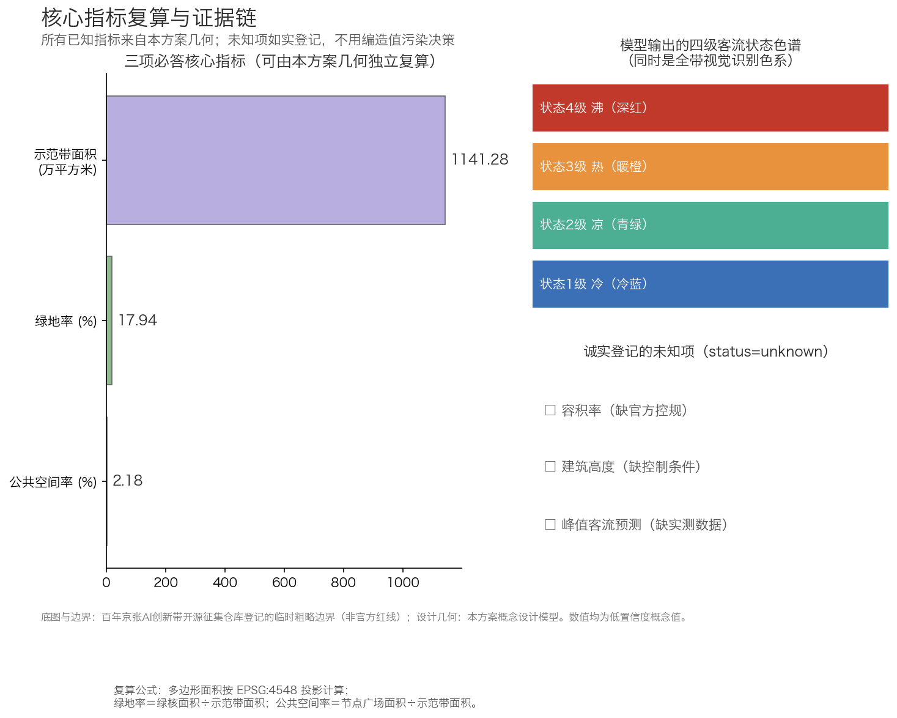

A Dynamic Crowd-Flow Control Model for Public Spaces — Demonstration on the Jing-Zhang AI Innovation Belt
This proposal introduces a dynamic crowd-flow control model for public spaces: a perception layer that handles only anonymous, aggregated movement states; a computation layer that rates density, flow speed, and bottleneck risk with parameters from public standards; and an application layer that translates results into design-stage checks and operations actions. The model is demonstrated along the Jing-Zhang railway heritage park corridor — making safety visible.
A Dynamic Crowd-Flow Control Model for Public Spaces — Demonstration on the Jing-Zhang AI Innovation Belt
Design Basis and Source List
The first basis of this proposal is the Prequalification Announcement for the Centennial Jing-Zhang AI Innovation Belt Urban Design Open Call Source; the second is the Agent Open Call Taskbook Source. All spatial judgments derive from the repository's registered provisional rough boundaries Source Source. These boundaries are not official redlines; every area, ratio, and zoning derived from them is a low-confidence conceptual design value to be recalculated once official data is released.
The core contribution of this proposal is a dynamic crowd-flow control model applicable to public spaces, demonstrated along the Jing-Zhang railway heritage park corridor. The main contributor has methodological experience in urban public transport passenger-flow monitoring and has shared related methods publicly; this submission contains and requires no non-public operational data — all demonstration figures are clearly labeled simulated or conceptual values.
Source usage boundaries follow the repository registry Source: formal sources answer task requirements, background-only materials remain background, and provisional geometry yields only conceptual values. Gaps are logged in assumptions.json and the repository's missing_data_checklist.csv Source.

Three-Level Scope Framework
At the coordinated research area level (~43.6 km²), this proposal redraws no boundary and asks one question: how can the crowd-flow control model become a shared public-safety foundation across the three areas and two wings Source. At the overall design area level (~11.4 km²), we adopt the repository's provisional rough substitute boundary as the submitted scope Spatial data and delineate, along the schematic Jing-Zhang railway alignment inside it, a flow-control demonstration corridor of roughly 414 hectares as the detailed working object Spatial data.
Work deepens across levels: mechanism research at the research scale, conceptual structure at the overall scale, recalculable spatial design at the demonstration-corridor scale. The three key areas directly cite the repository's provisional rough ranges with their provisional status preserved Spatial data Spatial data Spatial data.
Once official redlines and key-area plans are released, everything listed in assumptions.json must be recomputed: all area-based indicators, node locations, and drawings Source.

Coordinated Research Area: Industry and Future City Research
Naming System and Logo Direction
Beyond the official name "Centennial Jing-Zhang AI Innovation Belt," this proposal suggests the brand name 「京张智脉」(Pulse of Jingzhang). "Pulse" ties together three threads: the Jing-Zhang railway as China's self-built steel artery a century ago; the innovation pulse of Zhongguancun; and — through this proposal's model — the city's flow states becoming visible for the first time.
The logo direction embeds a continuous crowd-flow waveform between two parallel rails. The color system reuses the model's four-level status spectrum (cold blue — teal — warm orange — deep red), so visual identity and model output are structurally the same thing. Fonts are limited to open-source licensed Chinese typefaces. Both naming and logo remain concept suggestions for professional refinement Source.
The Model's Position Among the Positionings, Functions, and Area-Wing Structure
Full responses live in compliance_matrix.json; here we state the model's position. Under the "intelligent, AI-vibrant city" positioning, the model is the safety operating system of public space. Under "AI+ scenario empowerment," it is among the most immediately deployable scenarios because it runs on anonymous aggregated data alone. Under "global voice in AI governance," a privacy-first, human-reviewable, fully switchable-off crowd management method is itself a governance narrative that can be shared internationally Source.
Across the three-areas-two-wings loop, the model supplies "one shared state language": campus flows at the AI Origin Community, test-range flows at Zhongzhiyuan, commercial flows at Dazhongsi, and event flows along both wings all read from the same rating levels and review procedures.
Global Case Studies
Six global cases from public publications inform this proposal through an "experience → transfer" reading:
| Case | Readable Experience | Transfer into This Proposal |
|---|---|---|
| Promenade plantée, Paris | Earliest complete conversion of abandoned rail viaduct into a linear park | Spatial prototype and phased logic for the heritage park corridor |
| High Line, New York | Operations mechanisms by which a rail-heritage park catalyzes surrounding renewal | Value-capture logic for mixed-innovation edges of the corridor |
| Rose Kennedy Greenway, Boston | Stitching back a city cut apart by sunken highways | East-west stitching: the corridor must not become a new barrier |
| King's Cross, London | Station-district renewal where public space carries daily programming | Event systems and time-shared management of node plazas |
| Shibuya station-city integration, Tokyo | Layered pedestrian networks relieving high-intensity interchange | Two-layer organization of metro flows and ground-park flows |
| URA pedestrian-friendly guidelines, Singapore | Institutionalizing pedestrian-flow assessment in design workflows | How the model enters building-design checks institutionally |
The conclusion: upgrading crowd management from an operations tool to a pre-condition of design has clear international precedents — but no mature paradigm yet exists for a decoupled perceive-compute-apply model that is privacy-first, human-reviewable, and switchable-off. This proposal aims to fill exactly that gap Standard.
Overall Design Area: Urban Renewal and Regulatory-Plan-Level Urban Design
The renewal framework is summarized as "one pulse, one network, one set of rules":
One pulse: the Jing-Zhang heritage park corridor, the only continuous north-south public-space resource in the overall area and the natural carrier of the model demonstration Spatial data.
One network: slow-traffic and rail-transfer networks. Metro Line 13 stations (Dazhongsi, Zhichunlu, Wudaokou — schematic points in the constraints layer) and east-west streets between the North 3rd and 4th Ring Roads form a three-level metro–park–street connection Spatial data Spatial data. All road alignments are schematic context, not redlines or engineering conclusions.
One set of rules: how model outputs enter city management — which nodes need pre-positioned diversion plans on peak days, which interfaces need queuing space, which events need advance simulation. These rules are written as management suggestions for operators and professionals to refine Depth.
Honesty note: existing building stock, ownership, and regulatory indicators are unavailable in public sources, so this section gives no building totals, retention-renovation-demolition ratios, or implementation promises; corresponding entries remain unknown in the structured files Source.
Detailed Design of Key Areas
The three key areas share one model kernel but grow three distinct spatial characters Spatial data:
Zhongzhiyuan AI Acceleration Area: Order for Testing
Carrier of the full-stack autonomous innovation system. Here the model is an order supplier for testing: low-speed shuttle and delivery-robot pilots need real pedestrian environments, and real pedestrians need safety boundaries. Test lanes and pedestrian mainlines separate in plan and switch over in time; opening and closing conditions are triggered automatically by rated states with one-touch human takeover Spatial data. All testing arrangements are concept suggestions, not approved operations Source.
Beijing AI Origin Community: Warmth for Innovation
Community carrier of a world-class ecosystem. What matters here is lingering: encounters among researchers, founders, and students in informal space. The memorial plaza and technology-experience plaza become the community's living room, where the model shifts from control to service — forecasting comfortable hours, recommending encounter nodes, protecting quiet low-density zones Spatial data.
Dazhongsi AI Industry Cluster: Elasticity for Commerce
Adjacent to metro stations with the heaviest flows, Dazhongsi is the model's extreme-condition proving ground. The station plaza presets three scripts (weekday / weekend / event day); movable interfaces let commercial spill-out expand and contract with the state level Spatial data. Rules proven here generalize to the whole belt.

AI Innovation Ecosystem, Personas, and AI+ Scenarios
Personas
Six personas: commuters (efficiency-first), residents including many seniors (safety and quiet first), university students (night-active), visitors (wayfinding-dependent), AI practitioners and developers (mechanism-sensitive, participation-minded), and space-operations managers (needing explainable bases rather than black-box alarms). Every scenario card names its persona mix Source.
AI Scenario Cards (12 cards, incl. 3 industrial test-validation scenarios)
| ID | Scenario | Personas | Data Input (all anonymous & aggregated) | Spatial Anchor | Privacy & Human Review |
|---|---|---|---|---|---|
| SC-01 | Station-park diversion guidance | Commuters, students | Simulated exit volumes, corridor density | Wudaokou, Zhichunlu forecourts | Point-level notices only; operator confirms before publishing |
| SC-02 | Slow-traffic gap diagnostics | Planners, cyclists | Observed delays, simulated heat traces | Corridor-wide network | Outputs are ranked suggestions subject to professional traffic review |
| SC-03 | Event-day flow rehearsal | Operations managers | Publicly reported historical ranges | Four node plazas | Results advisory; command stays human |
| SC-04 | Accessible journey companion | Seniors, wheelchair users | Manually surveyed facility ledger + slopes | Corridor-wide accessibility net | Route data never leaves device |
| SC-05 | Missing-person point assistance | Visiting families | Family-initiated report descriptions | Node plazas | Point-level only; facial recognition banned; police-led |
| SC-06 | Comfort forecast for public space | Residents, visitors | Public weather + simulated seat occupancy | Green core | No personal data |
| SC-07 | Night-companion lighting | Night walkers | Segment density | Night walking sections | Lights follow density; no surveillance function |
| SC-08 | Heritage digital guide | Visitors, students | User-initiated interaction | Memorial plaza, schematic rail line | Content passes history review |
| SC-09 | Industrial test: low-speed autonomous shuttle segment | Enterprises, commuters | Vehicle telemetry + exclusion-zone flow states | Zhongzhiyuan test lane | Requires legally mandated permits; auto-stop at threshold |
| SC-10 | Industrial test: delivery-robot corridor | Merchants, enterprises | Robot pose + segment flow | Dazhongsi to enterprise parcels | Auto-withdrawal during dense periods |
| SC-11 | Industrial test: open algorithm testbed | Enterprises, researchers | Anonymous aggregated simulation datasets | Model interface (online + nodes) | Data contract required; outputs reproducible |
| SC-12 | Developer anonymized data sandbox | Developers | Same as above | Online | Aggregate statistics only; 15-minute minimum granularity |
The full scenario-space-operation matrix lives in compliance_matrix.json. The three industrial test scenarios share one idea: the model itself is testing infrastructure — enterprises get a standardized safety foundation without building their own sensing systems, the most pragmatic public good within the "full-stack autonomous innovation system" Source.
Land Use, Building Scale, and Retain-Renovate-Demolish Strategy
Within the demonstration corridor, concept zoning derives from one geometry: heritage park green ≈ 49%, plazas ≈ 6%, mixed-innovation edges ≈ 45% Spatial data. The three mandatory metrics are registered at the submitted-scope level in metrics.json and recalculated in the metrics table below Metric Metric.
These numbers' nature must be stressed: they are low-confidence design-model values computed from our own conceptual geometry under a projected coordinate system, with formulas and sources logged in metrics.json, to be recalculated when official boundaries arrive. FAR, heights, totals, and demolition classes are recorded as unknown — without official controls, any concrete number would impersonate statutory planning Standard. Concept massing blocks indicate layout only Spatial data.
Transport, Rail, Municipal Infrastructure, and Public Services
The transport strategy focuses on one thing: turning the last hundred meters from metro platform to park ground into a controlled buffer. Out-station flows overlapping park entries at morning and evening peaks form the belt's most typical dynamic-safety challenge. Design moves: graded queuing space on station forecourts; time-linked wayfinding between exits and park gates; physical guidance prioritized over electronic notices in extreme states Spatial data.
Station-Level Demonstration: Deploying the "Passenger-Flow Thermometer" Directly in Metro Stations
The core grading method of the model's computation layer is the "Passenger-Flow Thermometer" algorithm, matured by the proposal's main contributor through practice in public-transit passenger-flow monitoring: it takes only anonymous, aggregated sectional-count data as input, converts crowding and break-point risk at key cross-sections into a four-level "temperature" state (cold blue — teal — warm orange — deep red) using public technical parameters (Fruin pedestrian Level-of-Service grading; passenger-flow density and evacuation parameters from the national Metro Design Code GB 50157), and maps each state to a corresponding control action. This competition entry is the algorithm's first complete public demonstration Source.
The demonstration covers three stations of Line 13 — Dazhongsi, Zhichunlu, and Wudaokou — together with their forecourts Spatial data, each validating one operating condition: Dazhongsi tests high-grade state scripts under overlapping commercial flows (the model's "extreme-condition test bed"); Zhichunlu tests routine low-grade automatic patrol under commuting tides; Wudaokou tests station–park coordinated diversion when student and visitor flows stack at peaks. All demonstration values at the three stations are clearly labeled simulated values; no real monitoring data is used (see assumptions.json A-DATA-003).
The significance extends beyond the park belt: if the three-station demonstration gains recognition from the Haidian District authorities, the results can be submitted directly to Beijing Subway and other rail operators for evaluation, as an add-on tool to be replicated across existing stations' dynamic passenger-flow management. The "Passenger-Flow Thermometer" is therefore the proposal's portable asset — the algorithm depends on no specific site, and any public space with sectional-counting capability can deploy it at low cost. This is precisely what distinguishes a dynamic crowd-flow control model from a one-off spatial design Source.
Algorithm Disclosure
At the contributor's request, the core computation logic of the Passenger-Flow Thermometer is fully disclosed with this proposal, together with an interactive online demonstration driven by simulated data: https://jiumonanzhi.cn/temperature . The algorithm takes only anonymous, aggregated time-interval statistics as input: upstream/downstream sectional flows, station entry/exit counts, transfer volumes, the line's sectional capacity baseline, a time-of-day correction factor αt and a station-type correction factor αs, plus an evacuation capacity derived from escalator and stairway throughput. The computation has four steps Source:
1. Directional allocation: entry/exit volumes at terminal stations are assigned in full to their section direction; at intermediate stations they are split by directional allocation factors r_enter and r_exit; 2. Dual temperatures: boarding temperature Tu = (boarding demand ÷ remaining capacity) × 100; alighting temperature Td = (alighting demand ÷ sectional evacuation capacity) × 100; a simplified "pure-boarding temperature" using only boarding-side data is also provided for cases where alighting data is unavailable; 3. Sectional-difference combination: when alighting dominates (upstream > downstream), combined temperature = Td + max(Tu−10, 0)×0.3; symmetrically, boarding dominance yields Tu + max(Td−10, 0)×0.3; final temperature = combined temperature × αt × αs; 4. State grading: <40 normal, 40–60 watch, 60–75 Level-3 crowd, 75–90 Level-2 crowd, ≥90 Level-1 crowd; the demonstration renders five states in green–blue–yellow–orange–red, while the demonstration application's public interface consolidates them into the four-color language of cold blue — teal — warm orange — deep red.
All parameter values follow public industry standards and field-measurable attributes (equipment throughput, time-period and station-type factors), enabling full recalculation without any operator-internal data. The contributor retains authorship of the method and agrees to make it available for review, recalculation, and implementation within this project's open-source context.
For municipal and new infrastructure, restraint is the principle: perception uses minimal sectional-counting devices only; no new data center; computing reuses existing government cloud; every fixture degrades into ordinary street furniture on power or network loss — space keeps functioning when the system switches off Depth.

Blue-Green Network, Public Space, and Urban Character
The blue-green structure is "one corridor, six nodes": a linear green core linking six node plazas (Xizhimen gateway, Dazhongsi station, Zhichunlu life, Wudaokou innovation exchange, Qinghua East Road technology, Qinghuayuan memorial) Spatial data Spatial data. The character baseline respects industrial-heritage qualities — sleepers, weathering steel, native planting — while AI appears as light and data visualization rather than sculptural clutter.
AI Pilgrimage Landmarks (three)
"Arc of Flows" (Xizhimen gateway): a light arc translating the corridor's live flow states into color and breathing rhythm — the model made physical, the first sight of "making safety visible" Spatial data.
"Sleepers of Time" (Qinghuayuan memorial plaza): a ground installation along 1909 (railway completion), 2009 (Zhongguancun independent-innovation zone), and 2026 (AI belt launch), with the herringbone-track motif honoring Zhan Tianyou's engineering wisdom Spatial data.
"Ring of Pulses" (Dazhongsi station plaza): a ring display presenting the open-source contributor roll and the iteration history of submissions — pilgrimage honors collective labor, not idols Spatial data.
The honor system and component library (lamp poles, signage, seats, counters) register in the visualization page; all components use clearable open-source designs Source.
Renewal Projects, Implementation Policy, and Phasing
Phasing follows "rules first, green second, technology third" Spatial data:
Phase one (southern section) lands the model's minimum loop: one node plaza, one green-core stretch, one graded-state publishing mechanism — validating the perceive-compute-review chain in a real place Spatial data. Phase two completes green-core continuity and slow-traffic gaps Spatial data. Phase three adds industrial test lanes and cultural landmarks Spatial data.
Annual event system (concept only): spring Jing-Zhang AI Festival, summer developer 48-hour co-creation camp, autumn park academic week, winter light-art season. Developer-community operations combine scenario openness, data sandbox, and honor incentives; the conversion path runs testbed users → co-builders → tenant enterprises. Nothing here constitutes a confirmed government commitment Source.
Metrics, Area Recalculation, and Compliance Matrix
The three required core metrics recalculate as follows, each independently reproducible from the submitted geometry Metric:
| Metric | Value | Formula | Confidence |
|---|---|---|---|
| Metric | Value | Formula | Confidence |
| --- | --- | --- | --- |
| Overall design area | ≈ 11,412,825 m² | Polygon area under CGCS2000 projection (provisional boundary) | Medium (repository provisional boundary) |
| Green ratio | ≈ 17.94% | Green-core area ÷ overall design area | Low (conceptual) |
| Public-space ratio | ≈ 2.18% | Plaza area ÷ overall design area | Low (conceptual) |
Scope note: green and public space currently concentrate inside the demonstration corridor (the green core is roughly 49% of the corridor, node plazas about 6%); the scope-wide ratios will rise through phases two and three. All three values are independently reproducible from the submitted geometry Metric.
These are the taskbook's mandatory core visual metrics Source. Other indicators: FAR, height, and totals remain unknown pending official controls; per-capita space and demand forecasts need field data and are deliberately left unnumbered rather than fabricated Source. The visualization page's numeric declarations match metrics.json exactly Metric Metric.

Risk, Copyright, and Compliance
Data and privacy: the model handles only anonymous, aggregated, minimized movement states — no facial recognition, no individual trajectories, no retrievable location records; all demonstration figures are simulated. The contributor's practical background is stated only as methodological experience; no non-public operational data, internal reports, or uncleared material is included Spatial data.
Boundary precision: all spatial judgments rest on the repository's provisional rough boundaries, not official redlines; full recalculation follows official releases and may adjust the proposal Source.
AI-generated responsibility: this package was produced with an AI agent under final human authorship and responsibility. Global cases and standards citations rest on public materials; deviations will be corrected in continuous participation. Full statement in report/copyright_statement.md. Nothing herein constitutes statutory planning, approval basis, engineering conclusions, or any government commitment Standard.
Contact: human author Chen Xingyu (GitHub account 563323549-boop), email 563323549@qq.com — reviewers are welcome to reach out regarding model recalculation, demonstration deployment, and cooperation.
References
- Beijing Municipal Planning and Natural Resources Commission (Haidian Branch): Prequalification Announcement for the Centennial Jing-Zhang AI Innovation Belt Urban Design Open Call (May 2026).
- Agent Open Call Taskbook for the Centennial Jing-Zhang AI Innovation Belt (May 18, 2026 edition).
- Registered public sources, provisional-boundary derivation notes, and missing-data checklist of this open-call repository.
- Fruin, J., Pedestrian Planning and Design — classic level-of-service grading for pedestrians.
- GB 50157, Code for Design of Metro — published technical parameters for station density and evacuation.
- Ministry of Housing and Urban-Rural Development: Measures for Urban Design Management.
- Official project websites and published built-environment commentary for the six global cases (High Line; Promenade plantée; Rose Kennedy Greenway; King's Cross; Shibuya; URA pedestrian-friendly guidelines).
Registration status and usage boundaries of the above entries follow the repository source registry Source.